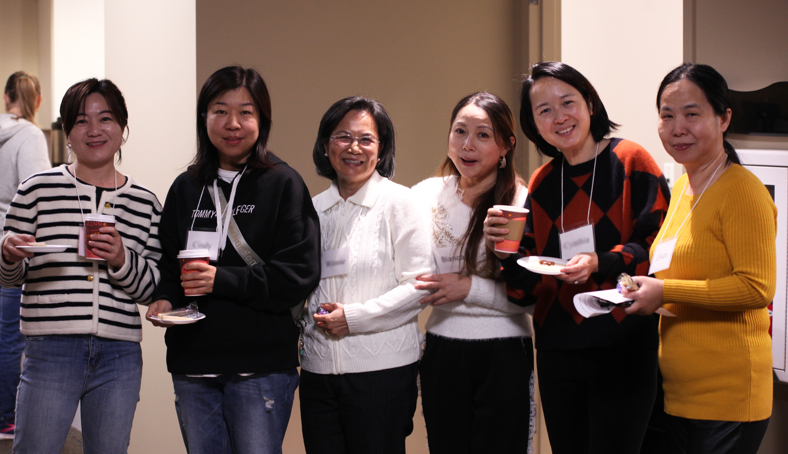
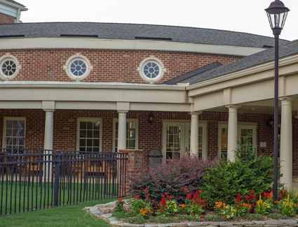

Welcome · Bienvenidos · 欢迎 · 환영합니다
Free English Classes
Friday mornings at The Shepherd’s Church in Cary, NC. Beginner to advanced, with an emphasis on conversation with English speakers.
We’re Glad You’re Here!
During the school year, free ESL (English as a Second Language) classes are offered on Friday mornings, 9:30–11:30 AM. This program provides beginner to advanced-level curriculum. Emphasis is on conversation with English speakers.
There is no cost to attend. Everyone is welcome.
Practice real-life English by talking with friendly English speakers.
Classes from beginner to advanced. No test to take.
Adults care for students’ children each Friday. Spaces are limited.
“At ESL we work with internationals to build relationships and share in their lives.”
Learn English. Make Friends.
Our classes start in September and run throughout the school year. Each Friday you will learn new words, practice speaking, and get to know people from your community and from around the world.
- Friday mornings, 9:30–11:30 AM
- September through May
- Family Center, 2nd floor (West Entrance)
What Our Students Are Saying
“Add a student quote here about their experience in the ESL program.”
— Student name“Add a student quote here about their experience in the ESL program.”
— Student name“Add a volunteer quote here about why they serve in the ESL ministry.”
— Volunteer nameESL Ministry
About Our Program
English as a Second Language
The Shepherd’s Church offers free ESL classes for adults who want to improve their English. Our classes are taught by caring volunteers and focus on conversation, so you can use English with confidence at work, at school, at the store, and with your neighbors.
Our classes are taught by English speakers with many years of experience, many of whom are professionals in a variety of different occupations.
Our free classes start in September and run throughout the school year. There is no test to take. There are 5 levels of classes, from beginner to advanced.

Our Mission
To create a welcoming community where people from every culture and background can practice English, be exposed to American culture, build meaningful relationships, and experience the Christian faith.
Welcome
We want every person who walks through our doors to feel at home, no matter where they come from.
Teach
We provide a beginner to advanced curriculum with an emphasis on conversation with English speakers.
Connect
We build lasting friendships and share the love of Christ with our international neighbors.
Beginner to Advanced
Classes & Registration
Class Options
There is no placement test. On your first day, our teachers will talk with you and help you choose the right class.
Beginner
Letters, numbers, greetings, and simple everyday words and phrases.
High Beginner
Short conversations about family, shopping, food, and daily life.
Intermediate
Longer conversations, asking questions, and talking about experiences.
High Intermediate
Reading, idioms, and discussing news, work, and community topics.
Advanced
Fluent discussion, American culture, and confident, natural speaking.
ESL/Citizenship
Prepare to interview for your American citizenship.
ESL Grammar
Understand the construction of the English language.
Childcare
Volunteers care for the children of our students each Friday. Spaces are limited.
A Typical Friday
Arrive & Sign In
Enter through the West Entrance and follow the green ESL signs.
Class Time
Meet with your level for lessons and guided practice.
Snack
Students will be given a snack to enjoy and meet with other students.
Bible
Students will be exposed to the Christian faith.
Dismiss
Pick up your children and see you next Friday!
Fridays, 9:30–11:30 AM
ESL Meeting Dates
ESL Student Schedule — 2026/2027
Fall Semester
- September11 – New Student Orientation (new students only)
18 – First Day of Class (new and returning students), 25 - October2, 9, 16, 23, 30
- November6, 13, 20
- December4, 11, 18 (Christmas Party)
Spring Semester
- January8, 15, 22, 29
- February5, 12, 19, 26
- March5, 12, 19
- April2, 9, 16, 23, 30
- May7, 14 (End-of-Year Party)
The Shepherd’s Church
Where We Meet
6051 Tryon Rd, Cary, NC 27518
Upon arriving at the church, drive in the Tryon Rd entrance that has a traffic light across from the Harris Teeter store. Do not park in the first parking lot on your left. Continue to the next parking lot.
Enter the building through the West Entrance doors (see the picture and the walk-through video below). Once inside, there will be green ESL signs to direct you to our meeting room on the 2nd floor of the Family Center. We hope to see you soon!

Walk to Registration
Follow this video from the parking lot through the West Entrance to ESL registration in the Family Center.
Serve With Us
Volunteer Opportunities
Share Your Life and Your Language
Shepherd’s English as a Second Language classes meet from 9:30–11:30 AM on Fridays. Volunteers come from 9:15–11:45 AM. At ESL we work with internationals to build relationships and share in their lives. We also have adults who care for the children of our students each Friday.
Teachers
Lead a class at one of our five levels using our curriculum.
Conversation Partners
Talk with students in small groups. No teaching experience needed.
Childcare
Care for the children of our students so their parents can learn.
Hospitality
Greet students, help with registration, and serve refreshments.
Ready to Get Involved?
We invite Shepherd’s members or regular attendees who would like to know more to contact Larry Hoxie or Laura Reak.
We’d Love to Hear From You
Contact Us
Interested in learning more, have questions, or want to get involved with our ESL Ministry?
Frequently Asked Questions
How much do the classes cost?
Nothing! Our ESL classes are free.
Do I need to take a test?
No. There is no test to take. There are 5 levels of classes, from beginner to advanced.
How do I register?
Registration is now in person, not online. Please arrive by 9:15 AM on Friday morning and come in the West Entrance to the Family Center second floor.
Can I bring my children?
Yes, if you register them in person. Volunteers care for the newborn / preschool children each Friday, but childcare spaces are limited.
When do classes meet?
Fridays from 9:30–11:30 AM. See the Schedule for exact dates. New students should attend the New Student Orientation on the first Friday of the fall semester.